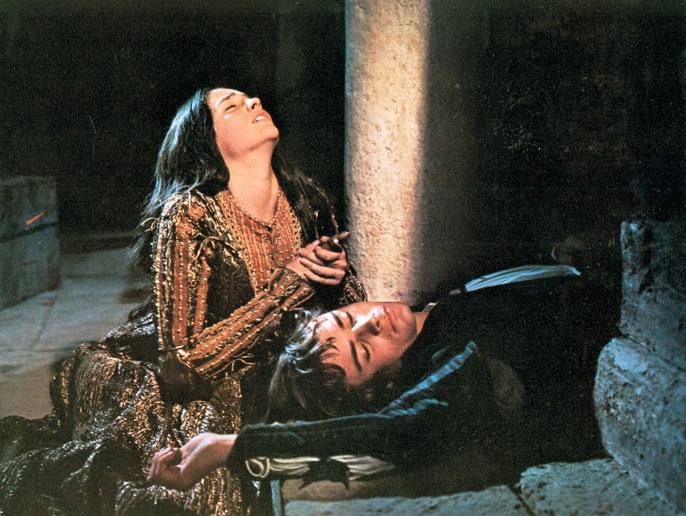

Краткое содержание: «Ромео и Джульетта»
Национальная гордость Англии, один из лучших поэтов в мире – так говорят об этом авторе. Уильям Шекспир (William Shakespeare, англ.) – знаменитый британский поэт и драматург , талант которого признан критиками и ценителями поэзии во всем мире. Произведения автора переведены на множество языков. Некоторые литературные шедевры поэта включены в школьную программу. Их в обязательном порядке изучают дети. Кроме того, по пьесам Шекспира ставят спектакли во многих театрах мира. И доказано, что произведения английского автора выбирают для театральных постановок чаще, чем работы других драматургов.
Ромео – сын супругов Монтекки, любимый Джульетты и ее муж.
Джульетта – дочь четы Капулетти, возлюбленная и жена Ромео.
Монтекки, Капулетти – две враждующие семьи.
Брат Лоренцо – монах, духовный отец Ромео.
Эскал – князь Вероны, выступает в роли судьи в городе.
Граф Парис – родственник князя, влюбленный в Джульетту и собиравшийся на ней жениться.
Меркуцио – друг Ромео, родственник князя.
Бенволио – друг Ромео, племянник Монтекки.
Балтазар – слуга Ромео.
Кормилица – няня Джульетты.
Тибальт – племянник Капулетти, брат Джульетты.
Хор – читает пролог к первым двум актам, по традиции античной трагедии выражает точку зрения автора произведения.
Действие трагедии охватывает пять дней одной недели, в течение которых происходит роковая череда событий.
Первый акт начинается с потасовки слуг, которые принадлежат к двум враждующим семьям — Монтекки и Капулетти. Неясно, что по служило причиной вражды, очевидно лишь, что она давняя и непримиримая, втягивающая в водоворот страстей и молодых, и старых. К слугам быстро присоед иняются знатные представители двух домо в, а затем и сами их главы. На залитой июльским солнцем площади закипает настоящий бой. Горожанам, уставшим от розни, с трудом удаётся разнять дерущ ихся. Наконец прибывает верховный правитель Вероны — князь, который приказывает прекратить столкновение под страхом смерти, и сердито удаляется.
На площади появляется Ромео, сын Монтекки. Он уже знает о недавней стачке, но мысли его заняты другим. Как и положено в его возрасте, он влюблён и с традает. Предмет его неразделённой страсти — некая неприступная красавица Розалина. В разговоре с приятелем Бенволио он делится своими переживаниями. Бенволио доб родушно советует обратить взор на прочих девушек и посмеивается над возражениями друга.
В это время Капулетти наносит визит родственник князя граф Парис, который просит руки единственной дочери хозяев. Джульетте ещё не исполнилось и че тырнадцати, но отец соглашается на предложение. Парис знатен, богат, красив, и о лучшем женихе нельзя мечтать. Капулетти приглашает Париса на ежегодный бал, который они дают в этот вечер. Хозяйка отправляется в покои дочери, чтобы предупредить Джульетту о сватовстве. Втроём — Джульетта, мать и кормилица, выраст ившая девочку, — они живо обсуждают новость. Джульетта пока безмятежна и послушна родительской воле.
На пышный бал-карнавал в доме Капулетти под масками проникают несколько молодых людей из вражеского лагеря — в том числе Бенволио, Меркуцио и Ромео. Все они горячи, остры на язык и ищут приключений. Особенно насмешлив и речист Меркуцио — ближайший друг Ромео. Сам Ромео охвачен на пороге дома Капулетти странной тревогой.
Добра не жду. Неведомое что-то,
Что спрятано пока ещё во тьме,
Но зародится с нынешнего бала,
Безвременно укоротит мне жизнь
Виной каких-то странных обстоятельств.
Но тот, кто направляет мой корабль,
Уж поднял парус...
В толчее бала, среди случайных фраз, которыми обмениваются хозяева, гости и слуги, взгляды Ромео и Джульетты впервые пересекаются, и, подобно осл епительной молнии, их поражает любовь.
Мир для обоих моментально преображается. Для Ромео с этого мгновенья не существует прошлых привязанностей:
Любил ли я хоть раз до этих пор?
О нет, то были ложные богини.
Я истинной красы не знал отныне...
Когда он произносит эти слова, его по голосу узнает двоюродный брат Джульетты Тибальт, немедленно хватающийся за шпагу. Хозяева упрашивают его не поднимать шум на празднике. Они замечают, что Ромео известен благородством и нет беды, даже если он побывал на балу. Уязвлённый Тибальт затаивает обиду.
Ромео тем временем удаётся обменяться с Джульеттой несколькими репликами. Он в костюме монаха, и за капюшоном она не видит его лица. Когда девушка выскальзывает из зала на зов матери, Ромео от кормилицы узнает, что она — дочь хозяев. Через несколько минут Джульетта делает т акое же открытие — через ту же кормилицу она выясняет, что Ромео — сын их заклятого врага!
Я воплощенье ненавистной силы
Некстати по незнанью полюбила.
Бенволио и Меркуцио уходят с бала, не дождавшись друга. Ромео в это время неслышно перелезает через стену и прячется в густом саду Капулетти. Чут ье приводит его к балкону Джульетты, и он, замирая, слышит, как она произносит его имя. Не выдержав, юноша отзывается. Разговор двух в люблённых начинается с робких восклицаний и вопросов, а заканчивается клятвой в любви и решением немедля соединить свои судьбы.
Мне не подвластно то, чем я владею. Моя любовь без дна, а доброта — как ширь морская. Чем я больше трачу, тем становлюсь безбрежней и богаче
Так говорит Джульетта о поразившем её чувстве. «Святая ночь, святая ночь... / Так непомерно счастье...» — вторит ей Ромео. С этого момента Роме о и Джульетта действуют с необычайной твёрдостью, отвагой и вместе с тем осторожностью, полностью подчиняясь поглотившей их любви. Из их поступков непроизвольно уходит детскость, они вдруг преображаются в умудрённых высшим опытом людей.
Их поверенными становятся монах брат Лоренцо, духовник Ромео, и кормилица, наперсница Джульетты. Лоренцо соглашается тайно обвенчать их — он надеется, что союз юных Монтекки и Капулетти послужит миру между двумя семьями. В келье брата Лоренцо совершается обряд бракосочетания. Влюблён ные переполнены счастьем.
Но в Вероне по-прежнему жаркое лето, и «в жилах закипает кровь от зноя». Особенно у тех, кто и без того вспыльчив как порох и ищет пов ода показать свою храбрость. Меркуцио коротает время на площади и спорит с Бенволио, кто из них больше любит ссоры. Когда появляется задира Тибальт с приятелями, становится ясно, что без стычки не обойтись. Обмен едкими колкостями прерван приходом Ромео. «Отстаньте! Вот мне нужный человек, — заявляет Тибальт и продолжает: — Ромео, сущность чувств моих к тебе вся выразима в слове: ты мерзавец». Однако гордец Ромео не хватается в ответ за шпагу, он лишь говорит Тибальту, что тот заблуждается. Ведь после венчанья с Джульеттой он считает Тибальта своим родственником, почти братом! Но никто этого ещё не знает. А Тибальт продолжает издевательства, пока не вмешивается взбешённый Меркуцио: «Трус ливая, презренная покорность! / Я кровью должен смыть её позор!» Они дерутся на шпагах. Ромео в ужасе от происходящего бросается меж ду ними, и в эту минуту Тибальт из-под его руки ловко наносит удар Меркуцио, а затем быстро скрывается со своими сообщниками. Меркуцио умирает на руках у Ромео. Последние слова, которые он шепчет: «Чума возьми семейства ваши оба!»
Ромео потрясён. Он потерял лучшего друга. Мало того, он понимает, что тот погиб из-за него, что Меркуцио был предан им, Ромео, когда защищал его честь... «Благодаря тебе, Джульетта, становлюсь я слишком мягок...» — бормочет Ромео в порыве раскаянья, горечи и ярости. В этот миг на площади вновь появляется Тибальт. Обнажив шпагу, Ромео налетает на него в «огненнооком гневе». Они бьются молча и исступлённо. Ч ерез несколько секунд Тибальт падает мёртвым. Бенволио в страхе велит Ромео срочно бежать. Он говорит, что смерть Тибальта на поединке буд ет расценена как убийство и Ромео грозит казнь. Ромео уходит, подавленный всем происшедшим, а площадь заполняют возмущённые горожане. П осле объяснений Бенволио князь выносит приговор: отныне Ромео осуждён на изгнанье — в противном случае его ждёт смерть.
Джульетта узнает о страшной новости от кормилицы. Сердце её сжимается от смертной тоски. Скорбя о гибели брата, она тем не менее непреклонна в оправдании Ромео.
Супруга ль осуждать мне?
Бедный муж, где доброе тебе услышать слово,
Когда его не скажет и жена на третьем часе брака...
Ромео в этот миг мрачно выслушивает советы брата Лоренцо. Тот убеждает юношу скрыться, подчинившись закону, пока ему не будет даровано п рощение. Он обещает регулярно посылать Ромео письма. Ромео в отчаянье, изгнанье для него — та же смерть. Он изнывает от тоски по Джульетте. Лишь несколько часов удаётся провести им вместе, когда ночью он тайком пробирается в её комнату. Трели жаворонка на рассвете извещают влюб лённых, что им пора расставаться. Они никак не могут оторваться друг от друга, бледные, терзаемые предстоящ й разлукой и тревожными предчувствиями. Наконец Джульетта сама уговаривает Ромео уйти, страшась за его жизнь.
Вошедшая в спальню дочери леди Капулетти застаёт Джульетту в слезах и объясняет это горем из-за смерти Тибальта. Известие, которое сообщает мать, заставляет Джульетту похолодеть: граф Парис торопит со свадьбой, и отец уже принял решение о венчанье на следующий день. Девушка молит родителей обождать, но те непреклонны. Или немедленная свадьба с Парисом — или «тебе тогда я больше не отец». Кормилица после уход а родителей уговаривает Джульетту не переживать: «Твой новый брак затмит своими выгодами первый...» «Аминь!» — замечает в ответ Джу льетта. С этой минуты в кормилице она видит уже не друга, а врага. Остаётся единственный человек, кому ещё может она доверять, — брат Лоренцо.
И если не поможет мне монах,
Есть средство умереть в моих руках.
«Всему конец! Надежды больше нет!» — безжизненно говорит Джульетта, когда остаётся наедине с монахом. В отличие от кормилицы Лоренцо не утешае т её — он понимает отчаянное положение девушки. Всем сердцем сочувствуя ей и Ромео, он предлагает единственный путь к спасению. Ей надо притвориться покорной воле отца, готовиться к свадьбе, а вечером принять чудодейственный раствор. После этого она должна погрузиться в со стояние, напоминающее смерть, которое продлится ровно сорок два часа. За этот срок Джульетту погребут в фамильном склепе. Лоренцо же даст знать обо всем Ромео, тот прибудет к моменту её пробуждения, и они смогут исчезнуть до лучшей поры... «Вот выход, если ты не оробеешь / Или не спутаешь чего-нибудь», — заключает монах, не утаивая опасности этого тайного плана. «Дай склянку мне! Не говори о страхе», — обрывает его Джульетта. Окрылённая новой надеждой, она уходит с флаконом раствора.
В доме Капулетти готовятся к свадьбе. Родители счастливы, что дочь больше не упрямится. Кормилица и мать нежно прощаются с ней перед сном. Джулье тта остаётся одна. Перед решающим поступком её охватывает страх. Что, если монах обманул её? Или эликсир не подействует? Или действие будет иным, чем он обещал? Что, если она проснётся раньше времени? Или ещё хуже — останется жива, но потеряет рассудок от страха? И все -таки, не колеблясь, она выпивает флакон до дна.
Утром дом оглашает истошный вопль кормилицы: «Джульетта померла! Она скончалась!» Дом охватывает смятение и ужас. Сомнений быть не может — Джуль етта мертва. Она лежит в постели в свадебном наряде, окоченевшая, без кровинки в лице. Парис, как все прочие, подавлен страшной вест ью. Музыканты, приглашённые играть на свадьбе, ещё неловко т опчутся, ожидая приказов, но несчастная семья уже погружается в безутешный траур. Пришедший Лоренцо произносит слова сочувствия близким и напомин ает, что покойницу пора нести на кладбище. ...«Я видел сон: ко мне жена явилась. / А я был мёртв и, мёртвый, наблюдал. / И вдруг от жарких губ её я ожил...» — Ромео, который скрывается в М антуе, ещё не подозревает, каким пророческим окажется это видение. Пока он ничего не ведает о случившемся в Вероне, а лишь, сжигае мый нетерпением, ждёт вестей от монаха. Вместо посыльного появляется слуга Ромео Балтазар. Юноша кидается к нему с расспросами и — о горе! — узнает ужасную весть о смерти Джульетты. Он отдаёт команду запрягать лошадей и обещает: «Джульетта, мы сегодня будем вместе». У местного а птекаря он требует самого страшного и скорого яда и за пятьдесят дукатов получает порошок — «в любую жидкость всыпьте, / И будь в вас силы за двад цатерых, / Один глоток уложит вас мгновенно».
В это самое время брат Лоренцо переживает не меньший ужас. К нему возвращается монах, которого Лоренцо посылал в Мантую с тайным письмом. Оказывает ся, роковая случайность не позволила выполнить поручение: монах был заперт в доме по случаю чумного карантина, так как его тов арищ перед тем ухаживал за больными.
Последняя сцена происходит в гробнице семьи Капулетти. Здесь, рядом с Тибальтом, только что положили в усыпальнице мёртвую Джульетту. Задержавшийс я у гроба невесты Парис забрасывает Джульетту цветами. Услышав шорох, он прячется. Появляется Ромео со слугой. Он отдаёт Балтазару письмо к отцу и отсылает его, а сам ломом открывает склеп. В этот момент Парис выступает из укрытия. Он преграждает Ромео путь, грозит ему арестом и казнью. Ромео просит его уйти добром и «не искушать безумного». Парис настаивает на аресте. Начинается поединок. Паж Париса в страхе б росается за помощью. Парис гибнет от шпаги Ромео и перед смертью просит внести его в склеп к Джульетте. Ромео наконец остаётся один перед гробом Джульетты, Он поражён, что в гробу она выглядит как живая и так же прекрасна. Проклиная злые силы, унёсшие это совершеннейшее из земных созданий, он целует Джульетту в последний раз и со словами «Пью за тебя, любовь!» выпивает яд.
Лоренцо опаздывает на какой-то миг, но он уже не в силах оживить юношу. Он поспевает как раз к пробуждению Джульетты. Увидев монаха, она немедленн о спрашивает, где её супруг, и заверяет, что все отлично помнит и чувствует себя бодрой и здоровой. Лоренцо, боясь сказать ей страшну ю правду, торопит её покинуть склеп. Джульетта не слышит его слов. Увидев мёртвого Ромео, она думает лишь о том, как скорее умереть самой. Она дос адует, что Ромео один выпил весь яд. Зато рядом с ним лежит кинжал. Пора. Тем более что снаружи уже слышны голоса сторожей. И девушка вонзае т себе в грудь кинжал.
Вошедшие в усыпальницу нашли мёртвых Париса и Ромео, а рядом с ними ещё тёплую Джульетту. Давший волю слезам Лоренцо поведал трагическую историю влюблённых. Монтекки и Капулетти, забыв о старых распрях, протянули руки друг другу, безутешно оплакивая мёртвых детей. Решено было поставить н а их могилах по золотой статуе.
Но, как верно заметил князь, все равно повесть о Ромео и Джульетте останется печальнейшей на свете...
Ромео – думая, что Джульетта мертва, выпивает яд и умирает.
Джульетта – увидев, что Ромео мёртв, пронзает себя кинжалом и тут же умирает.
Монтекки, Капулетти – после смерти детей обоих семейств прекращают многолетнюю вражду.
Брат Лоренцо – рассказывает Монтекки и Капулетти об истинной причине гибели их детей.
Граф Парис – в стремлении защитить тела Джульетты и Тибальта вступает в поединок с Ромео и погибает.
Меркуцио – погибает от шпаги Тибальта.
Тибальт – смертельно ранит Меркуцио, затем сам погибает в поединке с Ромео.
Как и сотни лет назад, события, описанные в трагедии Шекспира, волнуют наших современников глубиной чувств и характеров героев. Краткий пересказ «Ромео и Джульетты» подготовит читателя к восприятию истории светлой и верной любви молодых людей, победившей давнюю вражду семей.
После прочтения краткого содержания проверьте своё знание знаменитого произведения Шекспира: